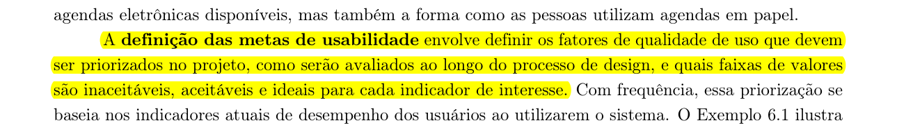

Metas de Usabilidade e Experiência do Usuário (UX)
Tabela de Contribuição e Uso de IA Generativa
| Integrante | Contribuição no Artefato | Data | Ferramenta de IA Utilizada | Propósito do Uso de IA |
|---|---|---|---|---|
| Vinicius Silva Araruna | Redação integral do documento, fundamentação teórica de usabilidade e UX, avaliação prática no Diolinux Plus, mapeamento de personas/tarefas e matriz de priorização | 05/10/2026 | Antigravity (LLM) | Apoio na estruturação analítica, verificação de métricas e formatação Markdown. |
| Edvaldo Soares Brasileiro Filho | Revisão técnica por pares e validação do mapeamento de tarefas HTA | 05/10/2026 | - | Revisão humana de conformidade acadêmica. |
| Gustavo Antonio Rodrigues e Silva | Revisão técnica por pares e validação da consonância com o Guia de Estilo | 05/10/2026 | - | Revisão humana de conformidade acadêmica. |
Introdução
Este artefato documenta a definição e a priorização das Metas de Usabilidade e das Metas de Experiência do Usuário (UX) para o Fórum Diolinux Plus, desenvolvidas na fase de Análise de Requisitos da disciplina de Interação Humano-Computador (FGA0173), na Faculdade UnB Gama (FGA/UnB).
No Ciclo de Vida de Mayhew (1999), a análise de requisitos estabelece os alicerces operacionais e qualitativos que norteiam todo o processo iterativo de design e avaliação. Conforme destacam Barbosa e Silva (2021, p. 104-106), a especificação clara de metas de usabilidade e de experiência previne concepções vagas de qualidade, permitindo que a equipe de projeto estabeleça critérios mensuráveis para decidir se uma intervenção na interface foi bem-sucedida ou se introduziu novas barreiras cognitivas ao usuário.
Neste projeto, as metas são fundamentadas nas características da comunidade de software livre que frequenta o Diolinux Plus, conectando-se diretamente ao elenco de personas e à análise de tarefas HTA elaborados na Etapa 2.
Metodologia e Fundamentação Teórica
A abordagem metodológica adotada conjuga a Engenharia de Usabilidade clássica de Nielsen (1993) e as dimensões afetivas e subjetivas do Design de Interação propostas por Rogers, Sharp e Preece (2013), harmonizadas pelo framework pedagógico de Barbosa e Silva (2021).
Metas de Usabilidade (Nielsen, 1993)
As metas de usabilidade concentram-se no desempenho operacional, na produtividade e na ausência de atritos funcionais durante a interação. São estruturadas em seis dimensões fundamentais:
- Eficácia (Effectiveness): Capacidade de o sistema permitir que o usuário atinja seus objetivos de maneira completa e correta (ex: publicar uma dúvida técnica com os diagnósticos necessários ou encontrar a solução precisa para um erro de sistema operacional).
- Eficiência (Efficiency): Produtividade propiciada pelo sistema na realização das tarefas, minimizando o dispêndio desnecessário de tempo e de recursos cognitivos ou motores.
- Segurança no Uso (Safety): Grau de proteção oferecido ao usuário contra erros indesejados, perdas de dados acidentais ou situações de estresse, assegurando mecanismos transparentes de reversão e recuperação.
- Utilidade (Utility): Capacidade de o sistema disponibilizar as funcionalidades e os recursos tecnológicos estritamente pertinentes e necessários para o domínio de trabalho do usuário.
- Facilidade de Aprendizado (Learnability): Rapidez e facilidade com que um usuário novato ou em transição compreende o modelo conceitual do sistema e se torna produtivo na execução das tarefas básicas.
- Facilidade de Memorização (Memorability): Capacidade de o sistema permitir que um usuário casual ou que retorne após longo período de inatividade retenha os padrões de navegação e comandos sem necessitar de retreinamento.
Metas de Experiência do Usuário — UX (Rogers, Sharp e Preece, 2013)
Enquanto a usabilidade avalia se o sistema funciona bem do ponto de vista funcional, a experiência do usuário investiga como o indivíduo se sente ao interagir com a interface. As autoras organizam as metas de UX em aspectos positivos almejados (satisfatório, motivador, engajador, recompensador, acolhedor) e aspectos negativos a serem mitigados (frustrante, confuso, entediante, punitivo).
Níveis de Desempenho e Critérios de Aceite (Barbosa e Silva, 2021)
Barbosa e Silva (2021, p. 106) orientam que a definição das metas não deve se restringir a declarações genéricas, exigindo a determinação de indicadores e faixas de valores com três patamares: o nível inaceitável (limiar de reprovação da interface), o nível aceitável (mínimo exigido para entrega) e o nível ideal (estado ótimo almejado no projeto).
A Figura 1 reproduz o trecho do livro-texto de Barbosa e Silva (2021, p. 106) que fundamenta a definição e priorização das metas de usabilidade na Engenharia de Usabilidade.

Figura 1 — Definição e priorização de metas de usabilidade segundo Barbosa e Silva (2021, p. 106).
Fonte: Barbosa e Silva (2021, p. 106).
Avaliação Prática das Metas de Usabilidade no Fórum Diolinux Plus
Nesta seção, cada uma das seis metas de usabilidade é examinada criticamente à luz da interface real do Fórum Diolinux Plus (baseado no software Discourse), contrastando seus pontos fortes com os atritos práticos enfrentados pelos membros da comunidade.
1. Eficácia (Effectiveness)
A eficácia no Diolinux Plus reside na capacidade de membros encontrarem diagnósticos válidos e resolverem dúvidas sobre distribuição, drivers e programas Linux sem falhas de comunicação ou respostas equivocadas.
- Aplicação no Sistema: A plataforma oferece categorização temática detalhada (ex: Iniciantes, Hardware, Notícias, Customização), sistema de tags e ferramenta de marcação de "Solução Aceita", que pinça a postagem resolutiva diretamente para o topo do tópico.
- Atritos e Limitações Identificadas: Usuários novatos com frequência redigem pedidos de ajuda sem fornecer os relatórios de hardware e logs do terminal necessários, gerando ciclos extensos de mensagens pedindo esclarecimentos. Adicionalmente, quando o usuário busca por sintomas vagos (ex: "tela preta após reiniciar"), a busca textual retorna tópicos não resolvidos ou desatualizados misturados a soluções definitivas, exigindo esforço investigativo manual redundante.
A Figura 2 ilustra a interface de visualização de tópico no Diolinux Plus, destacando a taxonomia de categorias e as tags de sistema que suportam a eficácia comunicativa.

Figura 2 — Interface de exibição de tópico técnico no Diolinux Plus com identificação de autor, tags e categorias.
Fonte: Captura realizada no Fórum Diolinux Plus, 2026.
2. Eficiência (Efficiency)
A eficiência reflete o custo operacional e o tempo que um usuário experiente despende para redigir postagens, moderar conteúdos ou localizar documentações técnicas.
- Aplicação no Sistema: O fórum é construído como uma aplicação de página única (Single Page Application — SPA), dotada de um editor flutuante minimizável no rodapé. Isso permite que o usuário navegue por múltiplos tópicos, copie trechos e referências e redija respostas em paralelo sem perder o contexto. Além disso, conta com um abrangente catálogo de atalhos de teclado (como a tecla
/para busca instantânea ecpara abrir o compositor de tópico). - Atritos e Limitações Identificadas: Os atalhos de teclado são totalmente invisíveis para quem utiliza a interface via mouse ou dispositivos móveis, sem qualquer tooltip explícito ou botão permanente de ajuda rápida. Usuários não avançados são forçados a realizar trajetos com múltiplos cliques pelo menu superior para aplicar filtros simples.
A Figura 3 demonstra o mecanismo de busca dinâmica com autocompletar e filtros de categoria no Diolinux Plus, acelerando a localização de tópicos.

Figura 3 — Modal de busca rápida preditiva no Diolinux Plus com segmentação por tópicos, categorias e usuários.
Fonte: Captura realizada no Fórum Diolinux Plus, 2026.
3. Segurança no Uso (Safety)
A segurança garante que o usuário não perca horas de redação técnica e não cometa enganos irreversíveis ao interagir ou formatar instruções do terminal.
- Aplicação no Sistema: O salvamento automático contínuo de rascunhos (drafts) opera em tempo real, sincronizado no navegador e no servidor. Caso o navegador trave, a conexão caia ou a aba seja fechada inadvertidamente, o conteúdo redigido reaparece intacto ao reabrir a plataforma. Além disso, o histórico de revisões de mensagens permite auditar e reverter qualquer edição equivocada de código.
- Atritos e Limitações Identificadas: As regras automáticas de proteção contra spam vinculadas ao nível de confiança inicial (Trust Level 0) bloqueiam a publicação de mais de uma imagem e restringem links externos para membros recém-cadastrados. Quando um usuário iniciante tenta enviar capturas de tela do seu erro de boot ou links de repositórios, o sistema bloqueia o envio com alertas genéricos, provocando surpresa e frustração por falta de um aviso prévio no editor.
4. Utilidade (Utility)
A utilidade traduz a oferta dos instrumentos computacionais exigidos pela rotina de suporte técnico e desenvolvimento de software.
- Aplicação no Sistema: O editor suporta blocos formatados de código-fonte com realce de sintaxe (syntax highlighting) para dezenas de linguagens e interpretadores de comando (Bash, Python, C++, Rust, YAML). Suporta ainda upload por arrastar e soltar (drag-and-drop) de logs e capturas de tela, menções de usuários com
@e renderização de tabelas em Markdown. - Atritos e Limitações Identificadas: Inexiste um assistente estruturado ou formulário guiado (template form) para abertura de tópicos de suporte. O usuário novato precisa memorizar manualmente a sintaxe de crases triplas (
```bash) para não poluir visualmente a página com saídas de terminal desformatadas.
5. Facilidade de Aprendizado (Learnability)
A facilidade de aprendizado mensura a facilidade com que novatos que migraram do Windows para o Linux começam a participar do ecossistema.
- Aplicação no Sistema: A interface reproduz convenções hegemônicas da Web moderna (feed centralizado, botão de criação em destaque azul, sinos de notificação e ícones universais). O bot nativo da plataforma (discobot) envia uma mensagem privada interativa ensinando novos membros a curtir, formatar e anexar arquivos.
- Atritos e Limitações Identificadas: A taxonomia dos níveis de confiança (Trust Levels de 0 a 4), os operadores booleanos da busca avançada e os critérios formais para marcação de solução não são explicados de forma integrada na navegação principal, exigindo que o usuário localize voluntariamente as diretrizes da comunidade para entender como seu perfil evolui.
6. Facilidade de Memorização (Memorability)
A facilidade de memorização assegura que membros ocasionais possam reutilizar o fórum meses após a resolução de seu primeiro problema sem estranhamento.
- Aplicação no Sistema: A rigidez da arquitetura de informação do Discourse mantém invariantes as posições do painel lateral de categorias, da barra de pesquisa e dos controles de conta. O acionamento da tecla
?abre uma central de atalhos que atua como suporte de memória externo imediato. - Atritos e Limitações Identificadas: Poucos atritos nesta dimensão, sendo a retenção do modelo mental um dos maiores pontos de estabilidade da plataforma.
A Figura 4 exibe o modal de atalhos de navegação e edição do Fórum Diolinux Plus, ativado via atalho de teclado.

Figura 4 — Modal de auxílio com catálogo de atalhos de teclado do Fórum Diolinux Plus.
Fonte: Captura realizada no Fórum Diolinux Plus, 2026.
Metas de Experiência do Usuário (UX) no Fórum Diolinux Plus
O engajamento em uma comunidade de suporte voluntário depende de fatores afetivos e de pertencimento social. Foram selecionadas e analisadas cinco metas primordiais de UX para o projeto:
- Motivador e Engajador: A interface utiliza um ecossistema de insígnias (badges), contadores de leitura e métricas de engajamento que incentivam membros a voltar frequentemente e compartilhar soluções para problemas complexos de terceiros.
- Recompensador e Valorizador: Quando o autor de uma dúvida marca a postagem de outro membro como "Solução Aceita", o sistema premia visualmente a resposta com um contorno verde destacado e incrementa a contagem de soluções no perfil público do respondedor, satisfazendo a necessidade de reconhecimento técnico.
- Acolhedor e Não Intimidador: Comunidades técnicas tradicionais de Linux historicamente carregam o estigma de respostas ríspidas a perguntas básicas (como o infame bordão "RTFM — Read The Fucking Manual"). O Diolinux Plus contrapõe essa barreira com mensagens amigáveis de moderação e lembretes de empatia, promovendo um ambiente receptivo para usuários em transição de sistema operacional.
- Redução de Frustração: A interface combate a frustração preservando rascunhos em tempo real e indicando tópicos similares durante a digitação do título, evitando que o usuário gaste tempo criando uma postagem duplicada cujo tema já foi debatido exaustivamente.
- Prestativo e Cooperativo: O sistema atua como assistente proativo ao sugerir tags relevantes e autoexpandir links de repositórios do GitHub e comandos do terminal com prévias explicativas.
Articulação com Personas e Análise de Tarefas (HTA)
As metas de usabilidade e experiência do usuário (UX) fundamentam-se na resolução de atritos reais vivenciados pelos utilizadores da interface. Em consonância com a reformulação metodológica decorrente do feedback da disciplina, o projeto do Fórum Diolinux Plus estrutura seu público-alvo em torno de três papéis funcionais de utilizadores do sistema (superando classificações motivacionais abstratas):
- Desenvolvedor / Contribuidor de Software Livre (Lucas Mendonça — Persona Primária): Utilizador com experiência técnica intermediária/avançada que publica dúvidas complexas com comandos, tutoriais e logs do terminal, busca debates aprofundados e atua colaborativamente na resolução de problemas de outros membros.
- Estudante / Usuário Aprendiz do Sistema (Persona Secundária): Utilizador em processo de aprendizagem ou transição para Linux que consulta a base de conhecimento para solucionar entraves cotidianos de instalação/drivers, busca orientações passo a passo e publica dúvidas de primeiro nível.
- Administrador / Moderador do Fórum (Persona Secundária): Utilizador investido de privilégios de gestão comunitária, responsável pela integridade taxonômica (categorias e tags), fechamento de discussões resolvidas, mediação de conflitos e governança das regras éticas da plataforma.
A Tabela 1 sintetiza o mapeamento integrado relacionando as metas clássicas de usabilidade de Nielsen (1993) e as metas de UX de Rogers, Sharp e Preece (2013) a esses papéis de utilizadores, vinculando-os diretamente às três tarefas modeladas na Análise Hierárquica de Tarefas (HTA) da Etapa 2 e aos fluxos de moderação da plataforma.
Tabela 1 — Mapeamento Integrado: Metas de Usabilidade e UX versus Papéis de Utilizadores e Tarefas HTA
| Meta de IHC / UX | Papel de Utilizador Impactado | Tarefa HTA Associada | Ponto de Tensão na Interface Atual | Indicador Mensurável / Critério de Aceite |
|---|---|---|---|---|
| Eficácia | Desenvolvedor / Contribuidor (Primária) e Estudante / Aprendiz (Secundária) | Tarefa 1: Criação e Publicação de Tópico de Dúvida | Estudantes publicam dúvidas sem logs do terminal ou dados de hardware, gerando respostas imprecisas e retrabalho para quem responde. | Maior ou igual a 90% dos tópicos de suporte abertos com especificações de sistema e hardware na postagem inicial. |
| Eficiência | Desenvolvedor / Contribuidor (Primária) e Administrador / Moderador (Secundária) | Tarefa 3: Busca Avançada e Filtros de Categoria | Dificuldade em filtrar rapidamente tópicos que já possuem solução aceita versus tópicos abertos, gerando duplicidade de discussões. | Redução do tempo médio de localização de soluções técnicas para até 45 segundos. |
| Segurança no Uso | Estudante / Aprendiz (Secundária) e Administrador / Moderador (Secundária) | Tarefa 2: Onboarding Interativo, Tutorial do Discobot e Progressão de Confiança | Bloqueio súbito de upload de logs e capturas de erro para membros em Trust Level 0 (anti-spam automático), interrompendo a jornada sem orientação clara sobre como atingir o Trust Level 1. | Zero ocorrências de bloqueio de postagem sem aviso contextual prévio e orientações claras de progressão de nível. |
| Utilidade | Desenvolvedor / Contribuidor (Primária) | Tarefa 1: Criação e Publicação de Tópico de Dúvida | Ausência de assistente estruturado de código força a digitação manual de crases Markdown, gerando blocos desformatados. | Maior ou igual a 95% dos trechos de código e comandos postados com realce de sintaxe (syntax highlighting) correto. |
| Facilidade de Aprendizado | Estudante / Aprendiz (Secundária) | Tarefa 2: Onboarding Interativo, Tutorial do Discobot e Progressão de Confiança | Sobrecarga cognitiva no primeiro contato para assimilar a taxonomia de categorias, atalhos de navegação e cumprir o tutorial interativo do bot assistente sem abandonar a plataforma. | Conclusão do onboarding prático e primeira interação orientada em menos de 4 minutos no primeiro contato. |
| Facilidade de Memorização | Desenvolvedor / Contribuidor (Primária) e Estudante / Aprendiz (Secundária) | Tarefa 3: Busca Avançada e Filtros de Categoria | Atalhos de teclado (como / para busca e c para criar tópico) são invisíveis na interface gráfica, exigindo reaprendizado. |
Preservação de atalhos em modal permanente de ajuda (?) acessível em 100% das páginas do fórum. |
| Recompensa e Reconhecimento (UX) | Desenvolvedor / Contribuidor (Primária) | Fluxo de Solução Aceita e Tarefa 1 | Autores de dúvidas esquecem de assinalar a resposta que solucionou o problema, frustrando contribuidores voluntários. | Aumento da taxa de tópicos de dúvida com solução oficialmente marcada para pelo menos 75%. |
| Acolhimento e Redução de Frustração (UX) | Estudante / Aprendiz (Secundária) | Tarefa 1: Criação de Tópico e Tarefa 2: Onboarding Interativo | Sentimento de intimidação técnica frente a restrições de novato (Trust Level 0) ou advertências de moderação por enquadramento incorreto de categoria/tags. | Exibição proativa de dicas contextuais no compositor e sugestão de tópicos resolvidos correlatos em menos de 1 segundo durante a digitação do título. |
Fonte: Elaborada pelos autores, 2026.
Conforme detalhado na Tabela 1, a matriz estabelece cobertura exaustiva das seis metas clássicas de usabilidade e das duas dimensões centrais de experiência, associando cada critério às tarefas formais de HTA (Tarefas 1, 2 e 3) e aos papéis funcionais do fórum.
Matriz de Priorização das Metas de Usabilidade e UX
Para orientar a tomada de decisões no projeto e calibrar os testes de usabilidade previstos no Ciclo de Mayhew, a equipe estabeleceu níveis de desempenho inaceitáveis, aceitáveis e ideais para cada indicador, em conformidade com Barbosa e Silva (2021, p. 106).
A Tabela 2 consolida a matriz de priorização das metas, classificando-as hierarquicamente em Prioridade Crítica (P1), Prioridade Alta (P2) e Prioridade Média (P3).
Tabela 2 — Matriz de Priorização das Metas de Usabilidade e UX para o Projeto Diolinux Plus
| Dimensão / Meta | Grau de Prioridade | Justificativa de Projeto | Nível Inaceitável | Nível Aceitável | Nível Ideal |
|---|---|---|---|---|---|
| Eficácia Técnica | Crítica (P1) | O objetivo precípuo do fórum é solucionar problemas computacionais; se a dúvida não é respondida corretamente, o sistema falha em seu propósito central. | Taxa de resolução de dúvidas abaixo de 60% | Taxa de resolução entre 75% e 85% | Taxa de resolução igual ou superior a 90% com solução aceita formal |
| Segurança de Dados e Rascunhos | Crítica (P1) | A perda de textos extensos de diagnóstico técnico em caso de falha de conexão afasta irremediavelmente os usuários. | Qualquer perda de rascunho por fechamento acidental de janela (abaixo de 98%) | 99% de recuperação automática de rascunhos | 100% de persistência com sincronização offline e online imediata |
| Facilidade de Aprendizado (Onboarding e Trust Levels) | Alta (P2) | Estudantes e novatos em transição para Linux desistem da plataforma caso o onboarding guiado pelo Discobot seja confuso e as restrições de Trust Level 0 pareçam punitivas e inexplicadas. | Taxa de abandono do onboarding interativo acima de 40% dos novos membros | Taxa de conclusão do tutorial inicial entre 70% e 80% | Taxa de conclusão igual ou superior a 90% com progressão natural para Trust Level 1 |
| Eficiência na Busca | Alta (P2) | O acervo histórico do Diolinux Plus possui milhares de tópicos; a busca rápida evita a criação de tópicos repetidos por estudantes e agiliza a moderação. | Tempo para encontrar tópico relevante acima de 90 segundos | Tempo de localização entre 30 e 45 segundos | Tempo de localização de até 15 segundos com autocompletar facetado |
| Sentimento de Recompensa (UX) | Alta (P2) | A retenção de Desenvolvedores e Contribuidores voluntários experientes depende diretamente do prestígio técnico e reconhecimento social na comunidade. | Taxa de marcação de solução aceita abaixo de 30% | Taxa de marcação entre 50% e 65% | Taxa de marcação igual ou superior a 80% com lembretes ao autor |
| Utilidade (Ferramentas de Código) | Média (P3) | Recursos de formatação de logs enriquecem a legibilidade técnica, embora possam ser supridos por comandos Markdown básicos. | Inexistência de realce de sintaxe para Bash e logs | Suporte manual a blocos de código com sintaxe básica | Inserção assistida de snippets com detecção automática de linguagem |
| Memorabilidade de Atalhos | Média (P3) | Afeta principalmente usuários frequentes de desktop, tendo menor impacto sobre novatos ou visitantes casuais. | Interface exigir reaprendizado após 30 dias de inatividade | Manutenção das rotas de navegação nos menus superiores | Retenção imediata com modal contextual de atalhos e dicas |
Fonte: Elaborada pelos autores, 2026.
Conforme evidenciado na Tabela 2, os esforços centrais de prototipação da Etapa 4 serão concentrados nas metas de prioridade crítica e alta (P1 e P2), assegurando a máxima efetividade das intervenções de design de interface propostas pelo Grupo 08.
Histórico de Versão
| Versão | Data | Descrição | Autor(es) | Revisor(es) |
|---|---|---|---|---|
1.0 |
05/10/2026 | Elaboração inicial completa do documento de Metas de Usabilidade e UX com fundamentação em Nielsen e Rogers/Sharp/Preece, aplicação no Diolinux Plus, mapeamento de personas/HTA e matriz de priorização | Vinicius Silva Araruna | Edvaldo Soares Brasileiro Filho, Gustavo Antonio Rodrigues e Silva |
Declaração sobre o Uso de Inteligência Artificial Generativa
Em conformidade com as diretrizes éticas e pedagógicas da disciplina de Interação Humano-Computador, declara-se que ferramentas de modelos de linguagem de grande porte (LLMs via plataforma Antigravity) foram empregadas exclusivamente como suporte instrumental para auxílio na estruturação das tabelas comparativas, padronização da notação matemática e revisão ortográfica dos textos em Markdown. Todas as análises críticas do Fórum Diolinux Plus, o cruzamento conceitual com as tarefas HTA e personas da equipe e a definição dos critérios métricos de priorização foram formulados, revisados e validados intelectualmente pelos discentes responsáveis.
Referências Bibliográficas
[1] BARBOSA, Simone Diniz Junqueira; SILVA, Bruno Santana da. Interação Humano-Computador. Rio de Janeiro: Elsevier / Campus, 2010.
[2] BARBOSA, Simone Diniz Junqueira et al. Interação Humano-Computador e Experiência do Usuário. 1. ed. Rio de Janeiro: Autopublicação, 2021. Cap. 6: Processos de Design de IHC (Ciclo de Mayhew), p. 103–108.
[3] MAYHEW, Deborah J. The Usability Engineering Lifecycle: A Practitioner's Handbook for User Interface Design. San Francisco: Morgan Kaufmann, 1999.
[4] NIELSEN, Jakob. Usability Engineering. Boston: Academic Press, 1993.
[5] PREECE, Jennifer; ROGERS, Yvonne; SHARP, Helen. Design de Interação: Além da Interação Homem-Computador. 3. ed. Porto Alegre: Bookman, 2013. Cap. 1: O que é Design de Interação?, p. 15–22.